Lag-r spatial resemblance experiment
Question: does context-sensitive resemblance persist beyond immediate adjacency? Ordered pairs are measured independently at horizontal and vertical displacement r. Only lags supported by both source and output are shown.
Metric convention
For each axis and lag, raw ordered-pair counts are pooled across outputs, then normalized within that axis/lag. KL is generated target P || source Q with natural logarithms, reusing the completed experiment implementation. There is no pseudocount or smoothing: generated mass on a source-zero pair yields ∞. Boundaries do not wrap and contribute no pair. Horizontal and vertical distributions are never pooled here.
Stick — 100-run distribution study
Seeds 0–99; 100 successful outputs per condition. The 7×7 source limits comparisons to r=1,2,4. All ordinary-WFC/SAT paired outputs were already known to be identical, and the lag curves match exactly as a correctness consequence—not a new engine result.
| Condition | n | r | Horizontal KL | Vertical KL |
|---|---|---|---|---|
| uniform — ordinary WFC | 100 | 1 | 0.409568 | 0.723867 |
| uniform — ordinary WFC | 100 | 2 | ∞ | 0.654783 |
| uniform — ordinary WFC | 100 | 4 | ∞ | 0.492916 |
| uniform — WFC-as-SAT | 100 | 1 | 0.409568 | 0.723867 |
| uniform — WFC-as-SAT | 100 | 2 | ∞ | 0.654783 |
| uniform — WFC-as-SAT | 100 | 4 | ∞ | 0.492916 |
| frequency — ordinary WFC | 100 | 1 | 0.00641994 | 0.163681 |
| frequency — ordinary WFC | 100 | 2 | ∞ | 0.13213 |
| frequency — ordinary WFC | 100 | 4 | ∞ | 0.0503286 |
| frequency — WFC-as-SAT | 100 | 1 | 0.00641994 | 0.163681 |
| frequency — WFC-as-SAT | 100 | 2 | ∞ | 0.13213 |
| frequency — WFC-as-SAT | 100 | 4 | ∞ | 0.0503286 |
| context — ordinary WFC | 100 | 1 | 0.000291703 | 0.00138318 |
| context — ordinary WFC | 100 | 2 | ∞ | 0.0152807 |
| context — ordinary WFC | 100 | 4 | ∞ | 0.0177979 |
| context — WFC-as-SAT | 100 | 1 | 0.000291703 | 0.00138318 |
| context — WFC-as-SAT | 100 | 2 | ∞ | 0.0152807 |
| context — WFC-as-SAT | 100 | 4 | ∞ | 0.0177979 |
Interpretation: Context's vertical improvement persists beyond adjacency: KL is 0.00138, 0.0153, and 0.0178 at r=1,2,4 versus frequency's 0.1637, 0.1321, and 0.0503. The advantage narrows with distance but does not decay monotonically. Horizontally, context is much better at r=1, but every condition has ∞ KL at r=2 and r=4 because generated outputs contain pairs absent from the tiny source; the unsmoothed metric cannot rank them there. The large horizontal/vertical difference confirms the expected directional structure.
simple-knot — representative seed 0
This is one representative example, not a distribution estimate. Metrics compare decoded RGBA tile pixels in the source with the completed 10×10 decoded output.
No lag values for failed ordinary-WFC cases: frequency, context. SAT recovered solutions after conflicts/backtracking.
Source
frequency — WFC-as-SAT
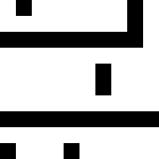
seed 0; 7 conflicts; 7 backtracks
context — WFC-as-SAT
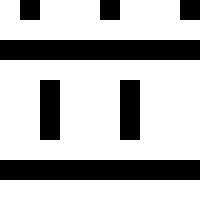
seed 0; 8 conflicts; 8 backtracks
| Condition | n | r | Horizontal KL | Vertical KL |
|---|---|---|---|---|
| frequency — WFC-as-SAT | 1 | 1 | 0.0243504 | 0.0769615 |
| frequency — WFC-as-SAT | 1 | 2 | 0.030504 | 0.0545205 |
| frequency — WFC-as-SAT | 1 | 4 | 0.0501574 | 0.239401 |
| frequency — WFC-as-SAT | 1 | 8 | 0.145238 | 0.0711804 |
| context — WFC-as-SAT | 1 | 1 | 0.0146364 | 0.107358 |
| context — WFC-as-SAT | 1 | 2 | 0.0183211 | 0.020763 |
| context — WFC-as-SAT | 1 | 4 | 0.293967 | 0.0933371 |
| context — WFC-as-SAT | 1 | 8 | 0.687373 | 0.372946 |
Interpretation: Only SAT succeeded. Context is better than frequency at r=1 and r=2 horizontally and at r=2 vertically, but worse at vertical r=1 and at both axes for the longer r=4 and r=8 comparisons. The context advantage therefore does not persist uniformly.
cat — representative seed 0
This is one representative example, not a distribution estimate. Metrics compare decoded RGBA tile pixels in the source with the completed 10×10 decoded output.
Source
frequency — ordinary WFC
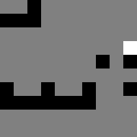
seed 0; N/A conflicts; N/A backtracks
frequency — WFC-as-SAT
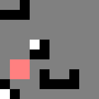
seed 0; 37 conflicts; 37 backtracks
context — ordinary WFC
seed 0; N/A conflicts; N/A backtracks
context — WFC-as-SAT
seed 0; 9 conflicts; 10 backtracks
| Condition | n | r | Horizontal KL | Vertical KL |
|---|---|---|---|---|
| frequency — ordinary WFC | 1 | 1 | 0.705529 | 0.626449 |
| frequency — ordinary WFC | 1 | 2 | 0.786546 | 0.728327 |
| frequency — ordinary WFC | 1 | 4 | 0.867001 | 0.849302 |
| frequency — ordinary WFC | 1 | 8 | 0.956649 | 1.78695 |
| frequency — WFC-as-SAT | 1 | 1 | 0.568993 | 0.537938 |
| frequency — WFC-as-SAT | 1 | 2 | 0.609093 | 0.627554 |
| frequency — WFC-as-SAT | 1 | 4 | 0.783738 | 0.65729 |
| frequency — WFC-as-SAT | 1 | 8 | 1.10541 | 1.12781 |
| context — ordinary WFC | 1 | 1 | 0.407801 | 0.540491 |
| context — ordinary WFC | 1 | 2 | 0.476943 | 0.59814 |
| context — ordinary WFC | 1 | 4 | 0.594703 | 0.512173 |
| context — ordinary WFC | 1 | 8 | 0.823054 | 0.735461 |
| context — WFC-as-SAT | 1 | 1 | 0.257957 | 0.34452 |
| context — WFC-as-SAT | 1 | 2 | 0.277829 | 0.403386 |
| context — WFC-as-SAT | 1 | 4 | 0.376011 | 0.517064 |
| context — WFC-as-SAT | 1 | 8 | 0.496217 | 1.47936 |
Interpretation: Context improves most horizontal and vertical values through r=8. CDCL changes the representative output substantially: context-as-SAT is best horizontally at every lag, but its vertical KL rises sharply at r=8, unlike ordinary context WFC. This nonlocal reversal is invisible in a pooled edge-KL number.
chess — representative seed 0
This is one representative example, not a distribution estimate. Metrics compare decoded RGBA tile pixels in the source with the completed 10×10 decoded output.
Source
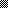
frequency — ordinary WFC
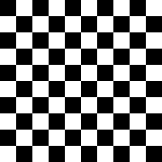
seed 0; N/A conflicts; N/A backtracks
frequency — WFC-as-SAT

seed 0; 0 conflicts; 0 backtracks
context — ordinary WFC

seed 0; N/A conflicts; N/A backtracks
context — WFC-as-SAT

seed 0; 0 conflicts; 0 backtracks
| Condition | n | r | Horizontal KL | Vertical KL |
|---|---|---|---|---|
| frequency — ordinary WFC | 1 | 1 | 0 | 0 |
| frequency — ordinary WFC | 1 | 2 | 0 | 0 |
| frequency — ordinary WFC | 1 | 4 | 0 | 0 |
| frequency — WFC-as-SAT | 1 | 1 | 0 | 0 |
| frequency — WFC-as-SAT | 1 | 2 | 0 | 0 |
| frequency — WFC-as-SAT | 1 | 4 | 0 | 0 |
| context — ordinary WFC | 1 | 1 | 0 | 0 |
| context — ordinary WFC | 1 | 2 | 0 | 0 |
| context — ordinary WFC | 1 | 4 | 0 | 0 |
| context — WFC-as-SAT | 1 | 1 | 0 | 0 |
| context — WFC-as-SAT | 1 | 2 | 0 | 0 |
| context — WFC-as-SAT | 1 | 4 | 0 | 0 |
Interpretation: Every condition is an exact lag-r match to the periodic source for every measurable lag. Lag-r adds no distinction on this deterministic representative case.
knot — representative seed 0
This is one representative example, not a distribution estimate. Metrics compare decoded RGBA tile pixels in the source with the completed 10×10 decoded output.
Source
frequency — ordinary WFC
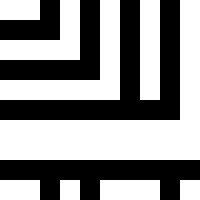
seed 0; N/A conflicts; N/A backtracks
frequency — WFC-as-SAT
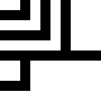
seed 0; 3 conflicts; 3 backtracks
context — ordinary WFC
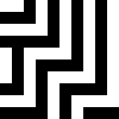
seed 0; N/A conflicts; N/A backtracks
context — WFC-as-SAT
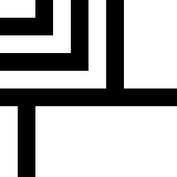
seed 0; 4 conflicts; 4 backtracks
| Condition | n | r | Horizontal KL | Vertical KL |
|---|---|---|---|---|
| frequency — ordinary WFC | 1 | 1 | 0.0687801 | 0.0977524 |
| frequency — ordinary WFC | 1 | 2 | 0.059965 | 0.0945838 |
| frequency — ordinary WFC | 1 | 4 | 0.0757307 | 0.117363 |
| frequency — ordinary WFC | 1 | 8 | 0.0514198 | 0.313758 |
| frequency — WFC-as-SAT | 1 | 1 | 0.00438053 | 0.0133896 |
| frequency — WFC-as-SAT | 1 | 2 | 0.0191566 | 0.0240823 |
| frequency — WFC-as-SAT | 1 | 4 | 0.0351691 | 0.103458 |
| frequency — WFC-as-SAT | 1 | 8 | 0.222734 | 0.192443 |
| context — ordinary WFC | 1 | 1 | 0.292854 | 0.0767606 |
| context — ordinary WFC | 1 | 2 | 0.0747313 | 0.0798954 |
| context — ordinary WFC | 1 | 4 | 0.118747 | 0.100173 |
| context — ordinary WFC | 1 | 8 | 0.251408 | 0.322039 |
| context — WFC-as-SAT | 1 | 1 | 0.00113491 | 0.00209322 |
| context — WFC-as-SAT | 1 | 2 | 0.030918 | 0.0169675 |
| context — WFC-as-SAT | 1 | 4 | 0.0300282 | 0.0831091 |
| context — WFC-as-SAT | 1 | 8 | 0.305666 | 0.217169 |
Interpretation: The ranking depends on direction and distance. Ordinary context WFC is worse than frequency horizontally at r=1, while context-as-SAT is markedly better near-range on both axes. At r=8 neither context condition dominates both axes. The SAT/WFC separation after CDCL conflicts persists beyond adjacency.
simple-wall — representative seed 0
This is one representative example, not a distribution estimate. Metrics compare decoded RGBA tile pixels in the source with the completed 10×10 decoded output.
Source
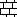
frequency — ordinary WFC

seed 0; N/A conflicts; N/A backtracks
frequency — WFC-as-SAT

seed 0; 0 conflicts; 0 backtracks
context — ordinary WFC

seed 0; N/A conflicts; N/A backtracks
context — WFC-as-SAT
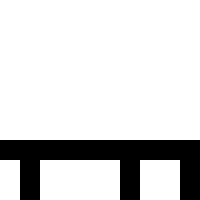
seed 0; 0 conflicts; 0 backtracks
| Condition | n | r | Horizontal KL | Vertical KL |
|---|---|---|---|---|
| frequency — ordinary WFC | 1 | 1 | 0.0599339 | 0.0825695 |
| frequency — ordinary WFC | 1 | 2 | 0.0737424 | 0.103431 |
| frequency — ordinary WFC | 1 | 4 | 0.0771827 | 0.292217 |
| frequency — ordinary WFC | 1 | 8 | 0.14326 | 0.390839 |
| frequency — WFC-as-SAT | 1 | 1 | 0.0599339 | 0.0825695 |
| frequency — WFC-as-SAT | 1 | 2 | 0.0737424 | 0.103431 |
| frequency — WFC-as-SAT | 1 | 4 | 0.0771827 | 0.292217 |
| frequency — WFC-as-SAT | 1 | 8 | 0.14326 | 0.390839 |
| context — ordinary WFC | 1 | 1 | 0.0599339 | 0.0825695 |
| context — ordinary WFC | 1 | 2 | 0.0737424 | 0.103431 |
| context — ordinary WFC | 1 | 4 | 0.0771827 | 0.292217 |
| context — ordinary WFC | 1 | 8 | 0.14326 | 0.390839 |
| context — WFC-as-SAT | 1 | 1 | 0.0599339 | 0.0825695 |
| context — WFC-as-SAT | 1 | 2 | 0.0737424 | 0.103431 |
| context — WFC-as-SAT | 1 | 4 | 0.0771827 | 0.292217 |
| context — WFC-as-SAT | 1 | 8 | 0.14326 | 0.390839 |
Interpretation: All four representative outputs and curves coincide. KL grows more strongly with vertical distance than horizontal distance, but neither heuristic nor engine is distinguished in this conflict-free case.
simple-maze — established configuration UNSAT
All four seed-0 conditions are UNSAT, so there is no generated grid and no lag-r measurement. Failed cases were not silently omitted.
Validation and overall interpretation
Lag-1 horizontal and vertical counts, after adding the existing H/V orientation tags and pooling, reproduce the completed oriented edge-frequency distribution exactly: true. All 100 paired Stick WFC/SAT grids—and therefore every lag measurement—match: true.
Lag-r adds useful information beyond edge KL: it shows persistence of the Stick vertical advantage, exposes unsupported horizontal long-lag pairs, and reveals distance-dependent reversals in cat, knot, and simple-knot. The representative CDCL cases show nonlocal WFC/SAT differences, especially cat vertical r=8 and knot across several lags, but one seed cannot support distribution-level claims. Improvement is not generally a smooth decay and is strongly directional.
Read the exact values above rather than inferring from the lines. Infinite values are scientifically meaningful under the established unsmoothed support convention. Repository examples are seed-0 diagnostics only; differences there may expose nonlocal CDCL effects, but cannot establish a generator distribution.
Limitations
No extra generation was performed. Stick's small source prevents r≥8. Benchmark conclusions are representative examples, output/source sizes differ, RGBA decoded pixels are measured rather than pattern identities, and UNSAT/failed outputs have no fabricated metric. Lag-r captures two-point displacement structure but not higher-order or topological structure.
Analysis runtime: 0.440 seconds. Machine-readable values: results.json.